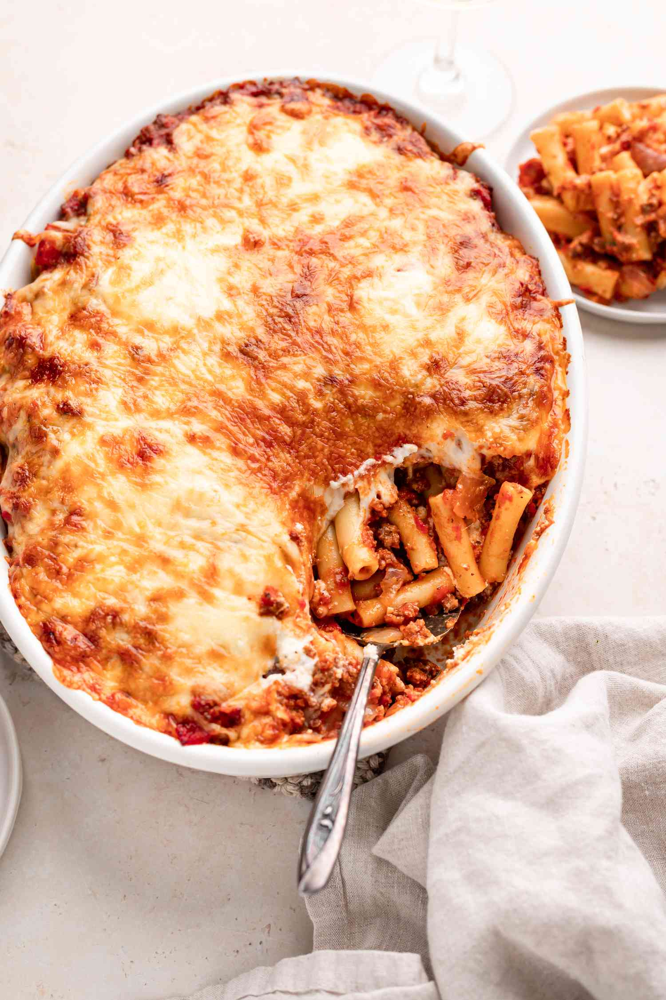

Baked Pasta

Ingredients
- 1 lb lean ground beef
- 1 medium onion diced
- 1 tablespoon Italian seasoning
- 1 tablespoon minced garlic
- 1 teaspoon salt
- 1/4 teaspoon black pepper
- 5 cups tomato pasta sauce roughly 2 jars
- 500 grams Rigatoni pasta about 1 lb
- 2 cups shredded mozzarella cheese
Instructions
-
In a large saucepan, stir and cook ground beef and onion over medium
heat until browned and onions have softened. Drain any juices released.
-
Add the Italian seasoning, garlic, salt and pepper and cook 1 minute.
-
Add the pasta sauce and cook, stirring occasionally, over medium heat,
for 5 minutes. Set aside.
-
Meanwhile, bring a large pot of salted water to a rolling boil over high
heat. Add rigatoni, reduce heat to medium-high, and cook just until al
dente (it will continue to cook slightly in the oven).
-
Reserve ½ cup pasta water and drain pasta. Stir reserved pasta water
into meat sauce.
-
Combine pasta and pasta sauce in saucepan. Pour into a lightly greased 9
by 13″ or similar baking dish.
-
Cover with a lightly greased piece of foil and bake at 350 degrees F for
20 minutes or until heated through.
-
**Optionally, cover and refrigerate up to 2 days. Bake at 350 degrees F
until heated through, about 30-40 minutes.
-
Uncover and sprinkle with cheese. Bake an additional 10 minutes, until
cheese has started to brown.